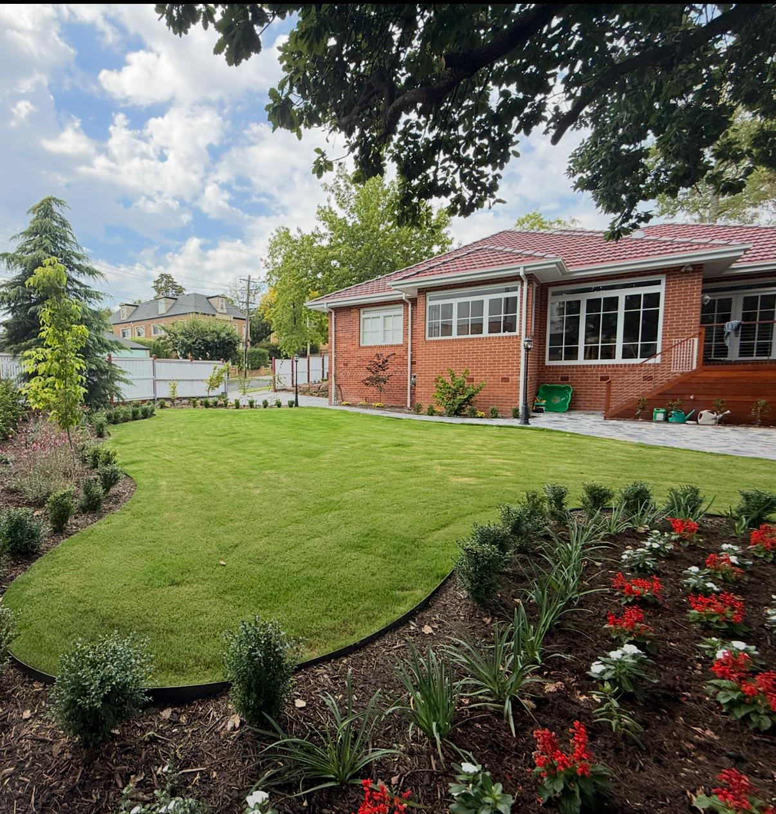

Excavation & site preparation
Site set-out, bulk and detail excavation, sub-base preparation and earthworks coordinated against the architectural levels.
Landscape design & construction · Melbourne's east
Landscape design and construction for architectural homes across Melbourne's east. One in-house team from first site walk to final handover, not three trades stitched together at the end.
5.0 across 28 Google reviews
Verified on Google Business Profile
The brief
On premium custom homes, the landscape is the last thing to start and the first thing people see. Architecturally ambitious projects deserve a landscape contractor who can carry that ambition through every stage of the work, not one who arrives at practical completion to lay turf around someone else's mistakes.
ANKS delivers landscape construction the way the build was drawn. Levels, drainage and structure are resolved against the architecture from day one. Hardscape, planting and lighting are detailed against the materials of the home. Handover happens once, and the landscape is established alongside the residents.

Scope
Site set-out, bulk and detail excavation, sub-base preparation and earthworks coordinated against the architectural levels.

Boulder, sandstone, masonry and concrete retaining. Pool surrounds, terraces and structural elements that anchor the landscape to the site.

Crazy paving, bluestone, aggregate driveways, brick paths, corten and timber edging. Detailed against the materiality of the home.

Hedging, feature trees, layered beds and turf. Planting palettes selected for the way they age, not just how they look on day one.

Garden uplights, path lighting and architectural fixtures. Final finishing details that bring the landscape into focus at dusk.

Walk-through inspections, maintenance guidance and establishment-period check-ins so the landscape settles in the way it was drawn.
Who we work with
For homeowners
Some clients come to us before there's an architect on the project, others after the build is well underway. Either way we run the landscape as a coordinated piece of work and communicate directly through every stage.
For architects & designers
We collaborate with architects, landscape designers and consultants to translate drawings into the built result. Materials are specified against the architecture, methodology is resolved before excavation, and the finished work reads as intended.
For custom builders
We run to builder programmes and resolve external works without becoming the reason a build slips. Earthworks and infrastructure can start while the home is being framed; planting and finishing land on practical completion week.


Recent work


Where we work
Our sweet spot sits across six eastern suburbs where architect and builder-led custom homes are most concentrated. We deliver across the wider east and south-east on the right projects.
Core six
Also serving Balwyn North, Brighton East, Glen Iris, Hawthorn East, Malvern, Malvern East, South Yarra, Surrey Hills, Toorak and beyond.
Common questions
The earlier the better. If we are involved during design we can coordinate levels, drainage and structural landscape elements against the architecture. We also work happily on projects we inherit later, once the build is underway or approaching practical completion.
Both. We resolve the landscape design with you and your architect or designer, then build it with our own team. Excavation, structure, hardscape, planting and lighting all sit under one company with a single line of accountability.
Our in-house team. Landscape, construction and earthworks all sit under one company. We do not subcontract the structural or earthworks portions to a separate firm and then arrive later to plant around their work.
You receive a walk-through inspection, maintenance guidance tailored to the planting and materials specified, warranty documentation and establishment-period check-ins as the landscape settles in. We are reachable for ongoing maintenance and future works.
Client reviews
Get in touch
Reach out directly. Alexander responds to emails and calls within 24 hours.